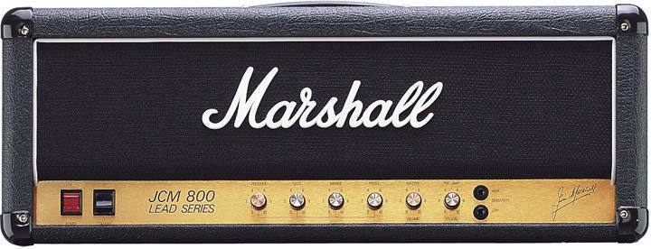
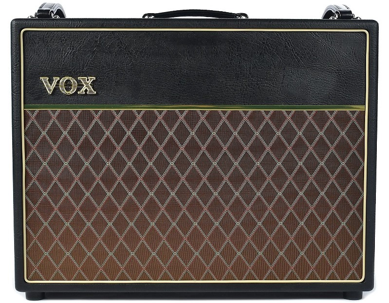
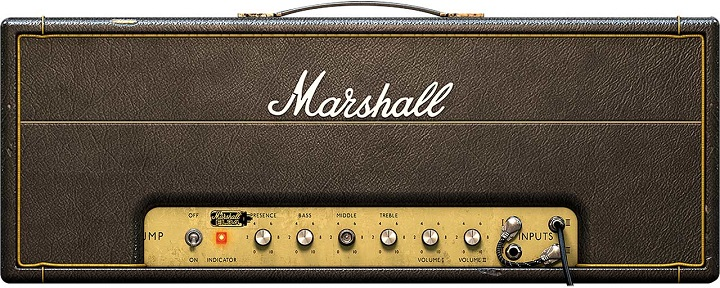

Arjun's Amps Picks
Marshall JCM 800
While the 1980s saw the emergence of dance music and new wave, rock music also maintained its influence in not only music but pop culture. From soft rock to glam metal, one guitar amplifier remained the common demominator between guitarists of the era. That was the Marshall JCM 800. Abbreviated after the founder of Marshall Amplification, Jim Charles Marshall, the amp delivered a tone and monstrous sound that is still widely used today. The amp is available at retailers today as part of a Vintage Reissue series for the amp line. While the number 800 is assumed to be associated with the 1980s decade, it actually came straight from Jim Marshall's licence plate.
Vox AC30

The opening chord to A Hard Day's Night remains one of the most iconic and sought after
chords in music history. Many have tried to recreate that opening, but none have been able to
achieve it. While we can lend the sound to the talent of The Fab Four, we should also examine
the equiptment used to create it. This brings us to the Vox AC30, the amp that defined the British
Invasion. Manufactured by Thomas Walter Jennings in Dartford, England in 1958, the amp gained mass
acclaim from its use by many great English groups: The Beatles, The Rolling Stones, The Kinks, The
Yardbirds, and Queen. The amp delivers a chimey and sparkly tone, one that continues to be loved and
adored today.
Marshall 1959 Super Lead 100 Watt Plexi
If you surveyed random guitarists and asked them what their all-time favorite guitar amplifier was, you'd likely reach a consensus on one particular model. This was the model that created the legendary Hendrix tone. The model that created the thunderous and rebellious sound of The Who. The model used by Eric Clapton, Angus Young, Eddie Van Halen, Randy Rhoads, Jimmy Page, Ritchie Blackmore, John Frusciante, Johnny Ramone. This list goes on and on. The amp of course is Marshall's 1959 Super Lead 100 Plexi. Despite its name, the 1959 released in 1965 after The Who's Pete Townshend requested Marshall to create a 100 watt amplifier. The amp popularized the 4x12 cabinet seen on most modern guitar stacks today. Once Jimi got his hands on one, the 1959 became the definitive rock amp. It is still available today as various Vintage Reissue models. However, an original Plexi from the 1960s will auction above $10,000. Hopefully the buyers have saved some money to treat their hearing loss. The 1959 Super Lead is my personal favorite amp of all time, and one that I will never be able to afford.